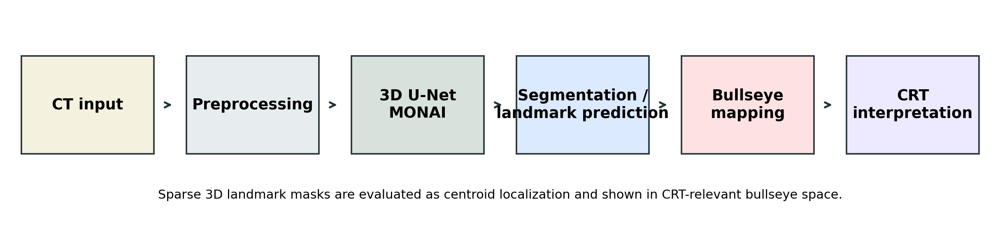

Publications and Projects / 2026
Cardiac Lead Localization in 3D CT
Locate the electrode contacts of a cardiac resynchronization therapy device and compare their positions across cardiac CT scans.

From voxels to landmarks
The team extracted electrode centroids from labeled volumes and checked their coordinates against manual Horos annotations. The apex, base, and anterior landmark define a patient-specific frame for comparing lead positions.
Evaluating localization
The project compares classical image processing with 3D MONAI and PyTorch models. Overlays show where a prediction lands on a scan, while centroid distances quantify localization error and bullseye plots summarize ventricular position.
Spring 2026 · UC San Diego BENG 280C
Austin Wong, Deepta Bharadwaj, and Nausheen Nakhawa